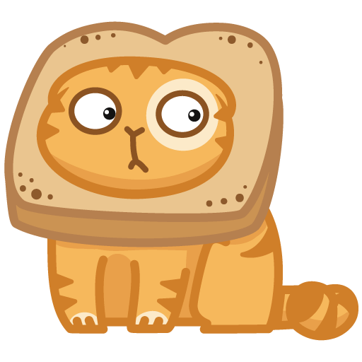
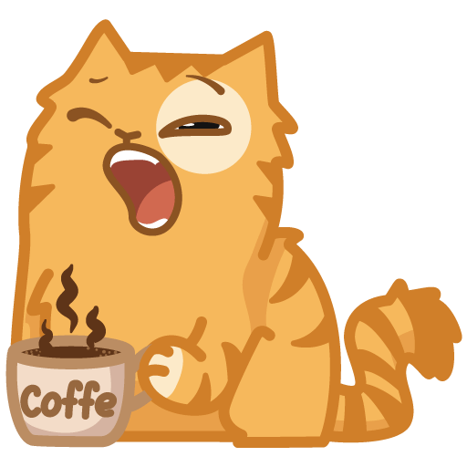
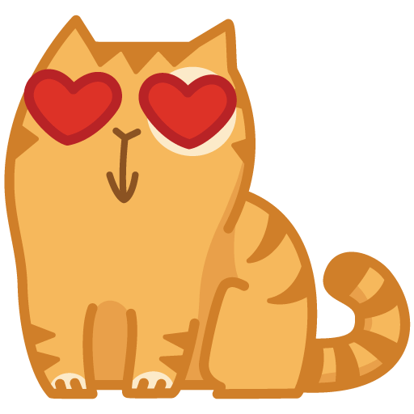

С точки зрения научной систематики, домашняя кошка — млекопитающее семейства кошачьих отряда хищных. Ранее домашнюю кошку нередко рассматривали как отдельный биологический вид.
С точки зрения современной биологической систематики домашняя кошка (Felis silvestris catus) является подвидом лесной кошки (Felis silvestris).

Являясь одиночным охотником на грызунов и других мелких животных, кошка — социальное животное, использующее для общения широкий диапазон звуковых сигналов, а также феромоны и движения тела.

На протяжении 10 000 лет кошки ценятся человеком, в том числе за способность охотиться на грызунов и других домашних вредителей.